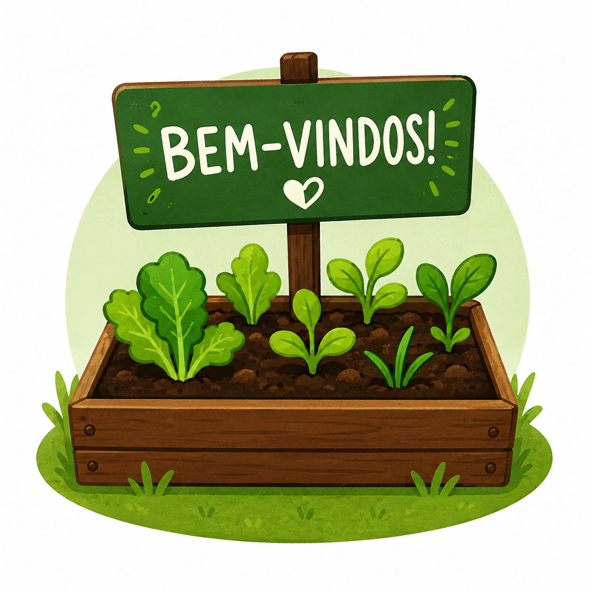

Bem-vindos ao meu diário!
Por: Rafael Moreira
Olá! Este é o meu diário da Horta do 1ºD.
Aqui vou registrar meus comentários, experiências e aprendizados durante as atividades que realizarmos na horta da escola.
Aos poucos vou compartilhar um pouco de cada etapa e contar como está sendo participar desse projeto.